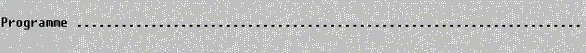

Utilisateur expérimenté uniquement
Dans la plupart des cas, vous lancerez vos programmes d'application Harmony comme n'importe quelle autre application Windows, à partir du plan de travail ou du gestionnaire de programmes.
Mais si vous lancez simplement "le système Harmony"
ou si vous quittez certaines applications, vous arrivez à ce qu'il est
convenu d'appeler sous Harmony la "Question Programme". Le système
affiche alors le message :

La réponse normale à apporter est le nom d'un programme ou d'un utilitaire
Harmony à exécuter. Ce nom doit respecter les règles régissant les noms
de fichier. Par exemple :
Harmony.dhop : appelle le programme de paramétrage
d'Harmony.
/Divalto/Sys/Xtools.dhop : appelle l'utilitaire Xtools, situé dans
le dossier système d'Harmony (chemin Harmony Harmony,
dossier Sys).
Remarque : lorsque vous quittez un programme ou un utilitaire appelé
depuis :
- la question Programme, vous revenez à la question Programme ;
- un menu, vous revenez au menu ;
- le bureau ou le gestionnaire de programmes de Windows, la fenêtre Harmony
est automatiquement refermée.
A la question Programme, vous pouvez aussi quitter Harmony en fermant la fenêtre à la manière habituelle (par le choix <Fermeture> du menu système ou par le bouton équivalent de la fenêtre Windows ou encore par la touche Alt+F4).